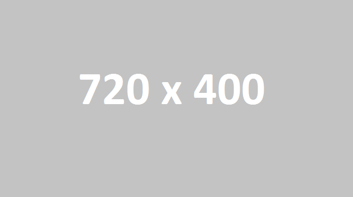
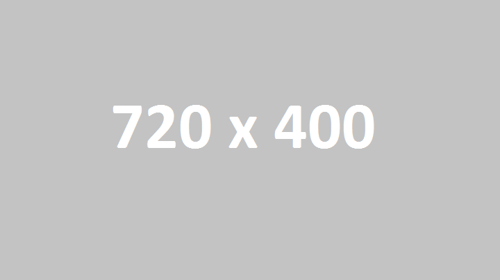
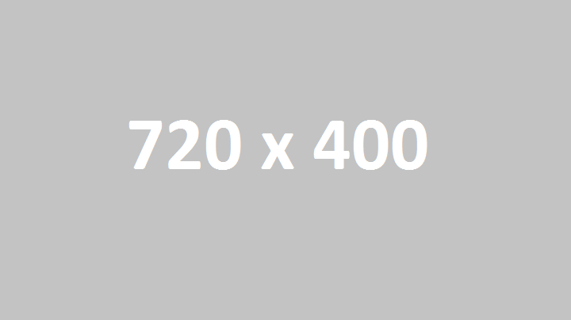
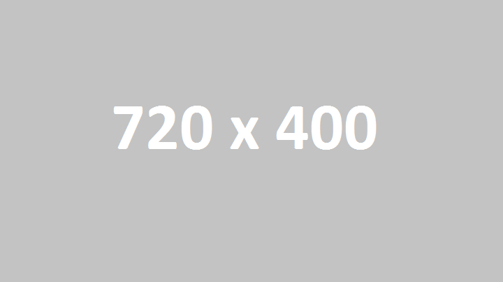

Hello my name is Jarrod Dowsey and this is my Portfolio. I am a student currently studying at the Academy of Interactive Entertainment in Melbourne, Victoria. The course I am studying is Professional Games Development Specializing in Programming. Having a look around my portfolio you will find some of my most proud pieces of work along with some other smaller projects I have worked on.
The Industry Pitch went very well and we recieved some great criticism on how to improve the way the game plays and ultimately increase how fun the game is. We are also pleased to welcome another artist to the group to help complete the game.
Preparation for the Industry Pitch is going very well, we have a good build where the game has all its function and is curving making it look like we are moving around the MCG. We have built and tested on Android Mobile devices and performance is great. More information to come after the big pitch.
Beer Run is starting to look really good. Our artist Tom has made a great main character based on a bogan Australian fitted out with an awesome animation. The game is coming along nicely and now has the basic functionality of running and spilling your beer as well as a character customization menu.
Beer Run now has Facebook functionality. Log in, Invite friends and share the game all over Facebook with ease. Through the use of the Facebook SDK the app can now easily do everything Facebook. More updates to come.
First update of the Beer Run game, weve got some concept art finished and the core of the game grayboxed and working on android devices, plenty more to go but we are still on track to finish it to our highest ability.
Beer Run is a Go! Myself and the group passed our first pitch and the procution of our app Beer Run has now begun, stay tuned for more updates on the prgress of the game.
Hey check out the latest update to my Portfolio - Neon Commander. This was an end of year assignment for the 1st year of my programming course, written in C sharp with Monogame its an exciting fast passed top down shooter.
View MoreHello and welcome to my blog. Following along with this blog you will enjoy to see updates of pieces of work i am currently working on or have previously finsihed and am adding to my portfolio.